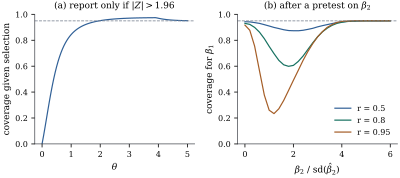

29.5 Selection bias and honest inference
Everything in Part III assumed that the model was fixed before the data were seen. After a search, the reported model, its coefficients, its error estimate and its test statistics are the ones that looked best, and each is biased: effects look larger, errors smaller, and intervals cover less often than they claim. This section proves the direction of the bias, measures it, and describes three remedies.
29.5.1. The winner’s curse
(a) (Selected maxima are biased upwards.) Let
(b) (Selected minima of risk estimates are optimistic.) Let
(c) (Selected intervals under-cover.) Let
Proof.
- (a)
- (b)
- (c) At
Part (a) is the winner’s curse: the
largest of ten unbiased estimates of equal means
overstates its mean by
Freedman (1983) described the following procedure,
which many analyses follow in some form. Fit
import numpy as np
from scipy import stats
rng = np.random.default_rng(2913)
n, m = 100, 50
def ols(X, y):
"""Coefficients, t statistics (slopes), overall F p-value; X without intercept."""
A = np.column_stack([np.ones(len(y)), X])
b, *_ = np.linalg.lstsq(A, y, rcond=None)
e = y - A @ b
df = len(y) - A.shape[1]
s2 = e @ e / df
t = b / np.sqrt(s2 * np.diag(np.linalg.inv(A.T @ A)))
ssr = np.sum((A @ b - y.mean()) ** 2)
F = (ssr / X.shape[1]) / s2
return t[1:], df, stats.f.sf(F, X.shape[1], df)
def screen_and_refit():
X = rng.normal(size=(n, m))
y = rng.normal(size=n) # no regressor matters
t, df, _ = ols(X, y)
keep = np.abs(t) > stats.t.ppf(1 - 0.25 / 2, df) # first pass: p < 0.25
t2, df2, p_F = ols(X[:, keep], y) # second pass on the survivors
return keep.sum(), np.sum(np.abs(t2) > stats.t.ppf(0.975, df2)), p_F
kept, signif, p_F = screen_and_refit()
print(f"one data set: {kept} kept, {signif} significant at 5%, overall F p-value {p_F:.4f}")
runs = np.array([screen_and_refit() for _ in range(500)])
print("over 500 data sets: mean kept", runs[:, 0].mean(), " mean significant", runs[:, 1].mean(),
" Pr(F significant)", np.mean(runs[:, 2] < 0.05))29.5.2. Coverage after selection
The failure in Proposition 29.5.1(c) concerns intervals reported only after selection. A subtler failure affects intervals for a coefficient that is always reported, when the model around it was chosen from the data.
Take two standardized regressors with correlation
Panel (a) is the one-dimensional case of Proposition 29.5.1(c)
with

1.96. (b) Coverage for \beta_1 of the usual 95\% interval from the model chosen by a 5\% test of \beta_2=0, for three correlations between the regressors (200000 simulations per point).">z = stats.norm.ppf(0.975)
def conditional_coverage(theta, c=z):
"""Pr(|Z - theta| <= z | |Z| > c) for Z ~ N(theta, 1): the reported interval."""
lo, hi = theta - z, theta + z
inside_sel = (stats.norm.cdf(max(hi, c) - theta) - stats.norm.cdf(max(lo, c) - theta)) \
+ (stats.norm.cdf(min(hi, -c) - theta) - stats.norm.cdf(min(lo, -c) - theta))
return inside_sel / (stats.norm.sf(c - theta) + stats.norm.cdf(-c - theta))
def pretest_coverage(delta, r, reps=200_000):
"""Coverage of the usual 95% interval for beta_1 after a 5% pretest of beta_2 = 0.
Two standardized regressors with correlation r, sigma known; delta = beta_2 / sd(beta_2 hat)."""
sd2 = 1 / np.sqrt(1 - r**2) # sd of either long-model slope
C = np.array([[1, -r], [-r, 1]]) / (1 - r**2) # covariance of (b1, b2) in the long model
b = rng.normal(size=(reps, 2)) @ np.linalg.cholesky(C).T + [0.0, delta * sd2]
keep = np.abs(b[:, 1] / sd2) > z # the pretest keeps x2
b1_short = b[:, 0] + r * b[:, 1] # short slope (sd 1)
cover_long = np.abs(b[:, 0]) <= z * sd2 # true beta_1 = 0
cover_short = np.abs(b1_short) <= z
return np.mean(np.where(keep, cover_long, cover_short))
for r, d_min in ((0.5, 2.2), (0.8, 1.8), (0.95, 1.2)): # the minimizing delta of the figure
print(f"r = {r}: coverage at delta = 0, {d_min}, 5:",
", ".join(f"{pretest_coverage(d, r, 50_000):.3f}" for d in (0.0, d_min, 5.0)))The coverage depends on the unknown
29.5.3. Honest inference, I: splitting the sample
The simplest remedy separates the two uses of the data. Choose the model on one part of the sample, and compute intervals from the other part, as if the model had been fixed in advance, which, for that part, it was (Cox 1975).
Let
Proof. Given
The target
29.5.4. Honest inference, II: covering every model
The second remedy keeps all the data and widens the intervals until they cover the coefficients of every model that could have been chosen, simultaneously. Then it does not matter which one was.
Assume the normal model Eq. 7.3.1 with
(a) With
(b) The same holds with
(c) If
(d) The smallest
Proof. In each case
This is the PoSI (post-selection inference) approach
of Berk, Brown, Buja, Zhang and Zhao (2013): model
selection treated as a multiple-comparison problem of Chapter 13.
The Scheffé bound never exceeds
For the state data, with the intercept always in, the
import itertools
import statsmodels.api as sm
rng = np.random.default_rng(2914)
data = sm.datasets.statecrime.load_pandas().data.drop(index="District of Columbia")
names = ["hs_grad", "poverty", "single", "white", "urban"]
ys = np.log(data["violent"].to_numpy())
Xs = np.column_stack([np.ones(len(ys)), data[names].to_numpy()])
ns, P = Xs.shape
nu = ns - P
# unit vectors u with coefficient of x_j in submodel M = (u' y) / ||v||, for every M and j in M
U = []
for k in range(1, 6):
for M in itertools.combinations(range(1, 6), k):
XM = Xs[:, [0, *M]]
V = XM @ np.linalg.inv(XM.T @ XM) # column i is v for coefficient i
for i in range(1, len(M) + 1):
U.append(V[:, i] / np.linalg.norm(V[:, i]))
U = np.array(U) # 80 unit vectors, all in C(X) minus 1
Qb, _ = np.linalg.qr(Xs)
Qb = Qb[:, 1:] # orthonormal basis of C(X) orthogonal to 1
W = U @ Qb # coordinates of the u's in that basis
sims = 100_000
Zp = rng.normal(size=(sims, P - 1))
s = np.sqrt(rng.chisquare(nu, size=sims) / nu)
K_posi = np.quantile(np.max(np.abs(Zp @ W.T), axis=1) / s, 0.95)
K_t = stats.t.ppf(0.975, nu)
K_bonf = stats.t.ppf(1 - 0.025 / len(U), nu)
K_sch = np.sqrt((P - 1) * stats.f.ppf(0.95, P - 1, nu))
print(f"{len(U)} coefficients; multipliers: t {K_t:.3f}, PoSI {K_posi:.3f}, "
f"Bonferroni {K_bonf:.3f}, Scheffe {K_sch:.3f}")Take
| naive | split in half | Scheffé | |
|---|---|---|---|
| no signal: coverage | 0.440 | 0.946 | 1.000 |
| no signal: mean half-width | 0.228 | 0.351 | 0.516 |
| three slopes of 0.3: coverage | 0.868 | 0.956 | 1.000 |
| three slopes of 0.3: mean half-width | 0.248 | 0.379 | 0.559 |
With no signal, fewer than half of the naive
intervals cover: a coefficient is reported only because
its estimate was large. Splitting restores the nominal
level at the cost of intervals about one and a half
times as wide. The Scheffé intervals, with multiplier
29.5.5. Honest inference, III: conditioning on the selection
The third remedy uses all the data and asks for coverage given that the model was selected. In the one-dimensional setting of Proposition 29.5.1(c) this can be done exactly.
Let
from scipy.optimize import brentq
def trunc_cdf(x, theta, c=z):
"""Distribution function at x of N(theta, 1) conditioned on |Z| > c."""
den = stats.norm.sf(c - theta) + stats.norm.cdf(-c - theta)
if x <= -c:
num = stats.norm.cdf(x - theta)
elif x < c:
num = stats.norm.cdf(-c - theta)
else:
num = stats.norm.cdf(-c - theta) + stats.norm.cdf(x - theta) - stats.norm.cdf(c - theta)
return num / den
z_obs = 2.5
lower = brentq(lambda th: trunc_cdf(z_obs, th) - 0.975, -10, z_obs)
upper = brentq(lambda th: trunc_cdf(z_obs, th) - 0.025, -10, 10)
print(f"naive interval [{z_obs - z:.2f}, {z_obs + z:.2f}], selective interval [{lower:.2f}, {upper:.2f}]")Lee, Sun, Sun and Taylor (2016) extended the
construction to selection events that are polyhedra
None of the three routes is free. The cheapest honest inference is still to fix the model before seeing the data, and to use selection for prediction, where its errors can be measured.
29.5.6. Exercises
A. Check your understanding
In Proposition 29.5.1(c),
take
B. Practice
In the orthonormal design of Proposition 29.2.5
with
Solution. By symmetry
Verify that the
Solution. Each of the
C. Going deeper
Let
Solution. On
In Example (Coverage after a pretest),
let